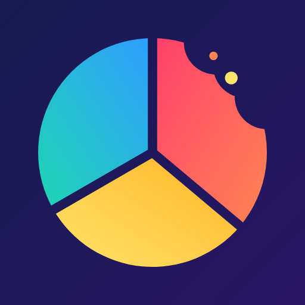
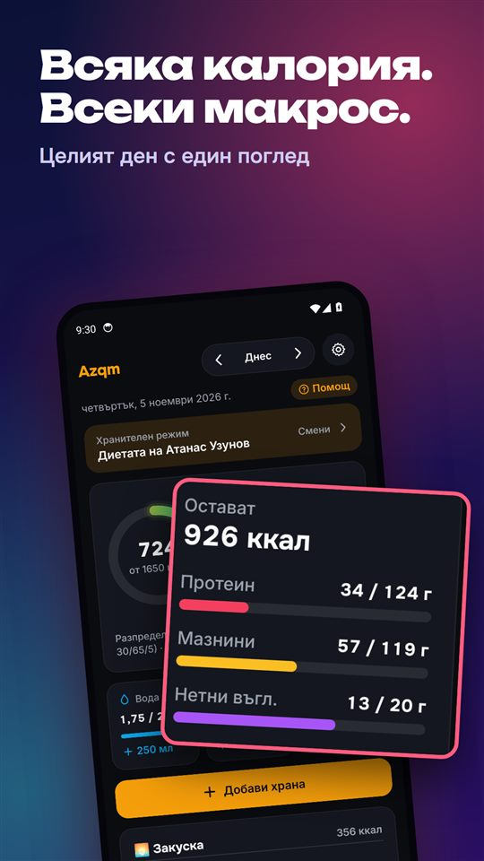

AzqmБезплатен брояч на калории, макроси и витамини с над 1000 храни на български, 14 хранителни режима и таймер за гладуване. Без реклами и без регистрация. A free calorie, macro and vitamin tracker with 1,000+ foods, 14 diets and a fasting timer. No ads, no account.
Изтеглете от Google PlayGet it on Google Play
Направено за хора, които искат да знаят повече от калориите.Made for people who want to know more than calories.
С подробни стойности по USDA, вкл. над 120 български ястия: баница, мусака, таратор, кебапчета.Detailed values from USDA data, including 120+ Bulgarian dishes.
Анализ на 30 хранителни вещества: какво не достига, какво е в излишък и от кои храни да го набавите.30 nutrients analysed: what's short, what's too much, and which foods fix it.
Таймер 16:8, 18:6, 20:4, OMAD 23:1 и до 72 часа, с етапите на гладуването и история.Timer for 16:8, 18:6, 20:4, OMAD 23:1 and up to 72 hours, with stages and history.
Търсене, скенер на баркод, любими, „Мои ястия“ и копиране на вчерашния ден.Search, barcode scanner, favourites, your own dishes and copy yesterday.
Тегло, средни калории за 7/30/90 дни, вода и прогноза кога ще стигнете целта си.Weight, 7/30/90-day averages, water and a forecast of when you'll reach your goal.
Без регистрация. Експорт в Excel и CSV, резервно копие и възстановяване.No account. Export to Excel and CSV, backup and restore.
Плъзнете настрани →Swipe sideways →
Всеки със свое разпределение на макросите и цветна точка до всяка храна: подхожда ли ви.Each with its own macro split and a coloured dot on every food showing whether it fits.
Да. Всичко описано тук е безплатно и без реклами. Има еднократна доброволна подкрепа (Pro), която отключва допълнителни неща: снимки за прогрес, теми, обиколки, напомняния.Yes. Everything above is free with no ads. An optional one-time support purchase (Pro) unlocks extras: progress photos, themes, body measurements, reminders.
Дневникът се пази само на телефона ви. Няма регистрация. Навън излизат само търсенето по баркод (в Open Food Facts) и снимките, ако сами включите разпознаване по снимка с ваш AI ключ.Your diary is stored only on your phone, with no account. Only barcode lookups (Open Food Facts) and photos, if you turn on photo recognition with your own AI key, leave the device.
Засега само за Android.Android only for now.
Добавете я през „Ръчно“ или сканирайте баркода. Можете и да ни пишете, за да я включим в следващата версия.Add it yourself under "Manual" or scan its barcode, or write to us and we'll add it in the next version.
Безплатно, на български, без реклами.Free, ad-free, in 8 languages.
Изтеглете от Google PlayGet it on Google Play